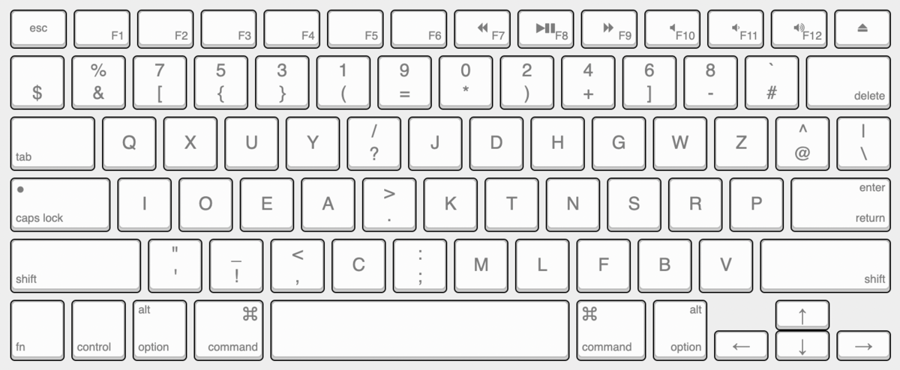
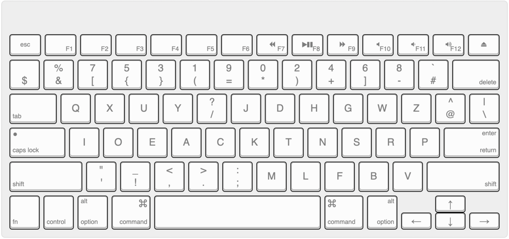

(分析用ファイル)
Programmer Astarte+の練習を少しずつ進めているのだけれど、やっぱりCの位置はオリジナルのAstarteが好きで、!と?は気持ち的に同列にしたいことから、上記バージョンに改定することにした。
今後も改定が続きそうなので、Programmer Astarte++ v0.2 というようにバージョン番号を振っていくことにする。確定したら最終的には Programmer Astarte++ を正式名称にしたいが、先日からその名称を先んじて使ってしまっているので、以前のバージョンは v0.1 としよう。
かな配列のときは複雑すぎて自分で改定する気にはなれなかったのだけれど、こうして気軽に変えていけるのもローマ字配列・英語配列の良さかもしれない。
念の為こちらにv0.1のリソースも置いておく。

Kayboard Layout Analyzer用の解析ファイルは以下。